シーズン2で導入したアドオン「More Enchants 3.0（Raiyon's More Enchantments）」で追加される全エンチャントの日本語訳です。ゲーム内ガイドブックを翻訳してまとめました。
追加エンチャントは、通常のエンチャントテーブルではなくディープスレート・エンチャントテーブルを使って付与します。
※ 手順は CurseForge の公式説明（英語）より。選択画面には各エンチャントに対応するアイテムのアイコンが表示されます。
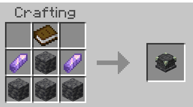
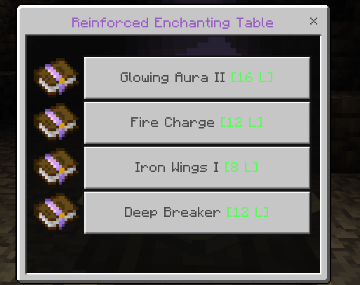
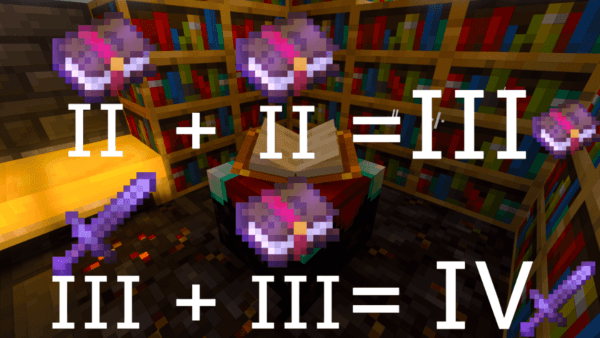
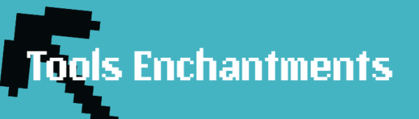
| エンチャント | レベル | 効果 | 対応アイテム | 競合 |
|---|---|---|---|---|
| ヴェインマイナーVein Miner | — | ひと振りで、つながった鉱脈をまるごと採掘する。 | ツルハシ | 精錬／鉱石錬金／幸運／スポナーシルク |
| 鉱石錬金Ore Alchemy I–III | I–III | 鉱石を掘ったとき、まれに石炭がダイヤに、鉄が金に変化する。レベルが上がるほど成功率アップ。 | ツルハシ | 精錬／ヴェインマイナー／スポナーシルク |
| 精錬Melting I–III | I–III | 掘ったその場で原石が製錬されることがある。レベルごとに即製錬の確率アップ。 | ツルハシ オノ シャベル | 鉱石錬金／ヴェインマイナー／スポナーシルク |
| 鉱夫の幸運Miner's Fortune | — | 石を掘ると、いろいろな鉱石がボーナスとしてドロップすることがある。レアな鉱物ほど出にくい。 | ツルハシ | シルクタッチ／スポナーシルク |
| スポナーシルクSpawner Silk | — | モブスポナーを壊すと、ブロックとして回収できる（代わりにツルハシの耐久を大きく消費）。モブの種類はそのまま保持。 | ツルハシ | ツルハシ系の全エンチャント |
| モメンタムMomentum I–III | I–III | 休まずブロックを壊し続けると採掘速度上昇（ヘイスト）が付く。掘り続けるほど効果が強まり、本のティアが高いほど上限も上がる。 | ツルハシ オノ シャベル | スポナーシルク |
| 知恵Wisdom I–III | I–III | ブロックを壊したとき、追加の経験値を得られることがある。レベルごとに確率アップ。 | ツルハシ オノ シャベル | シルクタッチ |
| 考古学者Archaeologist I–III | I–III | 砂利や砂をシャベルかブラシで壊すと、アイテムを発見することがある。レベルごとに発見率アップ。 | シャベル ブラシ | シルクタッチ |
| 木こりLumberjack | — | 原木を1本切ると、その木がまるごと倒れる。 | オノ | — |
| 葉刈りLeaf Feller | — | 葉ブロックを1つ壊すと、つながった葉がすべて一気に壊れる（ドロップは通常どおり）。 | ハサミ | シルクタッチ |
| 幸運な庭師Lucky Gardener I–III | I–III | 草木などの有機ブロックを壊すと、苗木・種・骨粉がドロップすることがある。レベルごとに収穫量アップ。 | クワ | シルクタッチ |
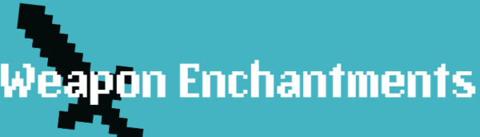
| エンチャント | レベル | 効果 | 対応アイテム | 競合 |
|---|---|---|---|---|
| エンドスレイヤーEnd Slayer I–V | I–V | エンダーマン・エンダーマイト・シュルカー・エンダードラゴンに与えるダメージが増える。レベルごとにダメージアップ。 | 剣 オノ | 虫特効／ダメージ増加／アンデッド特効 |
| ソニックウェーブSonic Wave I–V | I–V | 攻撃すると、近くの敵にも強力な衝撃波がヒットする。レベルごとに範囲とダメージアップ。 | 剣 | — |
| ソウルファイアSoul Fire I–V | I–V | 敵を「青い炎」で燃やし、燃焼ダメージ＋移動速度低下を与える。レベルごとにダメージと減速が強化。 | 剣 オノ | 火属性 |
| コロッサスColossus I–III | I–III | 自分の体力が少ないほど、与えるダメージが増える。レベルごとにダメージアップ。 | 剣 | — |
| ライフリーパーLife Reaper I–III | I–III | 攻撃した敵から体力を吸い取る。レベルごとにダメージと吸収量アップ。※剣とオノは吸収量が半分になる。 | 槍 剣 オノ | ダメージ増加 |
| クイックラーナーQuick Learner I–III | I–III | 倒したモブが落とす経験値オーブが増える。レベルごとに増加量アップ。 | 剣 オノ トライデント | ドロップ増加 |
| アースクエイクEarthquake I–III | I–III | メイスのスマッシュ攻撃が衝撃波を放ち、周囲の敵をスタンさせてダメージを与える。レベルごとに範囲とダメージアップ。 | メイス | — |
槍はこのアドオンと同作者のアドオンで追加される武器です。「使う（インタラクト）」はスマホなら長押し、PCなら右クリックです。
| エンチャント | レベル | 効果 | 対応アイテム | 競合 |
|---|---|---|---|---|
| スラッシュSlash | — | 使うと前方に斬撃を放ち、正面の敵をまとめてダメージ＋ノックバックする。 | 槍 | リターン／ジャベリン |
| ウーンディングWounding I–III | I–III | 攻撃時に35%の確率で敵を「負傷」させ、時間をかけてじわじわ体力を削る。持続時間はレベルに応じて延長。 | 槍 剣 | リターン／ジャベリン |
| ジャベリンJavelin | — | 長押しでチャージし、離すと槍を前方に投げ飛ばせる。 | 槍 | スラッシュ |
| リターンReturn | — | 投げた槍が、命中したあと手元に戻ってくる。※ジャベリンと組み合わせたときだけ有効。 | 槍 | スラッシュ |
| エンチャント | レベル | 効果 | 対応アイテム | 競合 |
|---|---|---|---|---|
| メテオインパクトMeteor Impact I–III | I–III | 矢が着弾すると爆発して、あたり一面を吹き飛ばす。レベルごとに爆発ダメージアップ。 | 弓 クロスボウ | ロングショット |
| ロングショットLongshot I–III | I–III | 矢が遠くまで飛ぶほど威力が上がる。レベルごとにダメージアップ。 | 弓 クロスボウ | メテオインパクト |
| フックショットHookshot I–III | I–III | スニーク中に撃つと、次のボルトがワイヤー（グラップリングケーブル）になる。着弾点まで体を引き寄せ、落下ダメージも無効。ティアが高いほど射程が長い。 | クロスボウ | 高速装填／貫通／拡散 |
| ボルテックスVortex | — | 投げたトライデントが命中すると、周囲のモブを渦に巻き込んで引き寄せる。渦の間はじわじわと小ダメージ。 | トライデント | 忠誠 |
| フッキングHooking I–III | I–III | 釣り針を当てた相手に大ダメージを与える。レベルごとにダメージアップ。 | 釣竿 | — |
| ファイアボールフリントFireball Flint I–II | I–II | 使うと火の玉を発射する。ティアIIは耐久の消費が少ない。 | 火打石と打ち金 | — |
| エンチャント | レベル | 効果 | 対応アイテム | 競合 |
|---|---|---|---|---|
| ピストンイジェクトPiston Eject I–III | I–III | 盾に攻撃してきた敵を、ものすごい力で弾き飛ばす。レベルごとにノックバックアップ。 | 盾 | リフレクティブガード |
| バーンオーラBurn Aura I–III | I–III | 自分の周囲にオーラをまとい、近づいた敵を燃やす。レベルごとにオーラの範囲アップ。 | 盾 | リフレクティブガード |
| フローズンタッチFrozen Touch I–III | I–III | 盾に攻撃してきた敵をカチカチに凍らせる。レベルごとに凍結の確率と持続時間アップ。 | 盾 | — |
| リフレクティブガードReflective Guard I–II | I–II | 飛んできた矢を、射った相手に跳ね返すことがある。ティアが高いほど確率が少し上がる。 | 盾 | バーンオーラ／ピストンイジェクト |
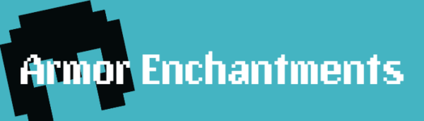
| エンチャント | レベル | 効果 | 対応アイテム | 競合 |
|---|---|---|---|---|
| グローイングオーラGlowing Aura I–II | I–II | 光るオーラをまとって、暗闇でも周囲を明るく照らす。レベルごとに光が強化される。 | ヘルメット | — |
| マグネティズムMagnetism I–III | I–III | 近くに落ちているアイテムを自動で引き寄せる。レベルが上がると範囲が広がり、経験値オーブも引き寄せる。 | ヘルメット | — |
| アンフィビアンAmphibian I–III | I–III | 水中での移動速度と機動力が大幅にアップする。レベルごとに速く泳げる。 | チェストプレート | — |
| ラストスタンドLast Stand | — | 体力が半分を切ると、短い間だけ耐性（ダメージ軽減）効果を得る。 | チェストプレート | — |
| バイタリティVitality I–V | I–V | 最大体力が増える。レベルごとにハート2個追加。※チェストプレートに付けるにはダメージ軽減系エンチャントが必要。 | エリトラ チェストプレート | — |
| ウィザーソーンズWither Thorns I–III | I–III | 近接攻撃のダメージを反射し、さらに攻撃者に衰弱（ウィザー）を与える。レベルごとに反射ダメージと衰弱時間アップ。 | チェストプレート レギンス | 棘の鎧 |
| スティッキーパンツSticky Pants | — | 壁に向かって走ると、そのまま壁を登れるようになる。 | レギンス | — |
| ダブルジャンプDouble Jump I–III | I–III | ジャンプ中にもう一度ジャンプ（2段ジャンプ）できる。レベルごとに2段目の高さアップ。 | ブーツ | スライムジャンプ |
| スライムジャンプSlime Jump | — | スニークするとジャンプ力をため込める。長くしゃがむほど高く跳べる。 | ブーツ | ダブルジャンプ／氷渡り／水中歩行 |
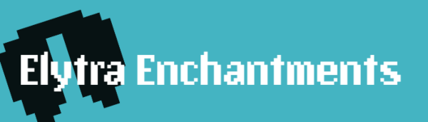
| エンチャント | レベル | 効果 | 対応アイテム | 競合 |
|---|---|---|---|---|
| リフトオフLift Off | — | ダブルジャンプすると、エリトラの強力なブースト（加速）が発動する。 | エリトラ | — |
| リーサルエッジLethal Edge I–III | I–III | エリトラで滑空中に敵へ体当たりすると、速度に応じたダメージを与える。レベルごとにダメージアップ。 | エリトラ | — |
「ノーチラス」は同作者のアドオンで追加される、騎乗できる海のモブです。専用のノーチラスアーマーを装備させられます。
| エンチャント | レベル | 効果 | 対応アイテム | 競合 |
|---|---|---|---|---|
| ホースウォーカーHorse Walker | — | 馬のひづめの下の水が短時間凍る。川を凍らせて氷の道に変えられる。 | 馬鎧 | — |
| キャリーCarry | — | サドルを手に持ってモブにインタラクトすると、そのモブを頭の上に乗せて運べる。 | サドル | — |
| 深海の眼Eyes of the Deep | — | このアーマーを装備したノーチラスに乗っている間、暗視効果を得る（シンプル／ファンシー描画モードでは、さらに鮮明な視界になる）。 | ノーチラスアーマー | — |
| シェルラムShell Ram I–III | I–III | ノーチラスに乗って敵に体当たりすると、速度に応じたボーナスダメージを与える。 | ノーチラスアーマー | — |
| スパイクハーネスSpiked Harness I–V | I–V | 騎乗中に受けたダメージを、攻撃してきた相手に反射する。レベルごとに反射効果アップ。 | ハーネス ノーチラスアーマー | ペットプロテクター |
| ペットプロテクターPet Protector I–III | I–III | 飼いならしたペットが、攻撃されると噛みついて反撃するようになる。レベルごとに反撃ダメージアップ。 | ペット用装備 | スパイクハーネス |
CurseForge の配布ページに掲載されている公式のデモGIF・画像です。
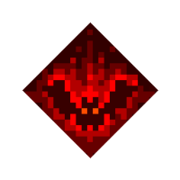
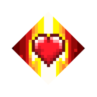
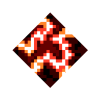
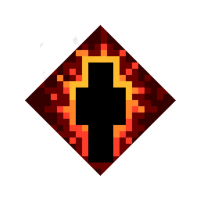
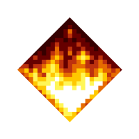
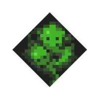
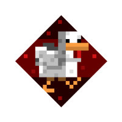
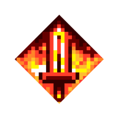
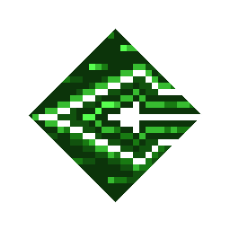
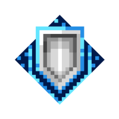
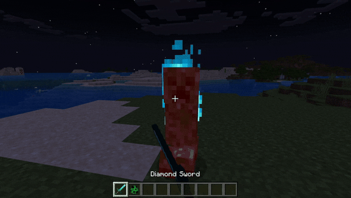
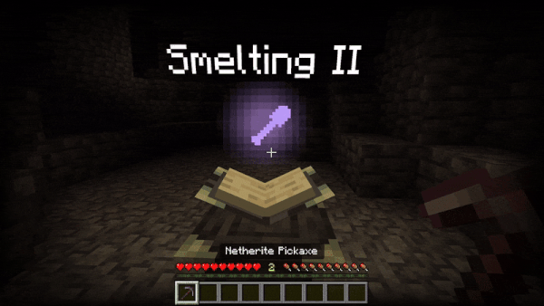
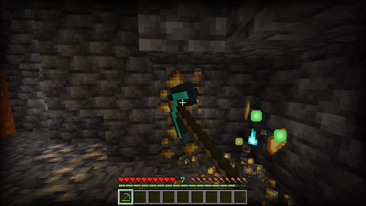
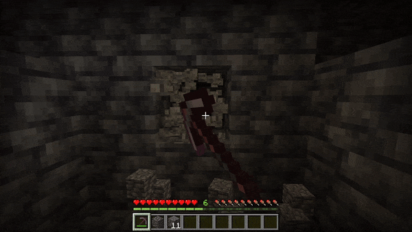
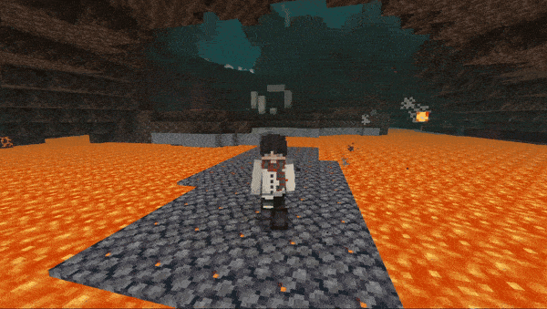
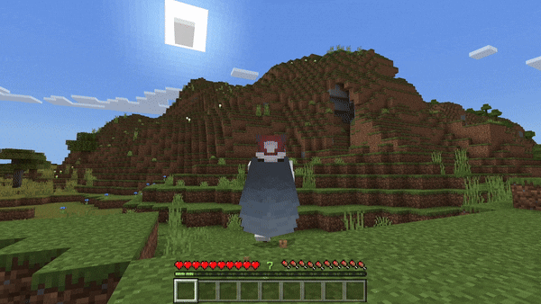
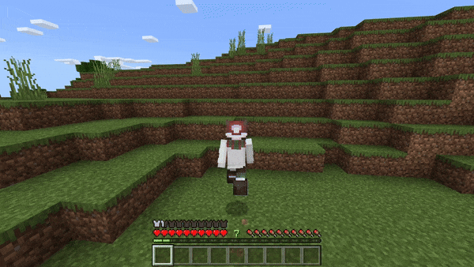
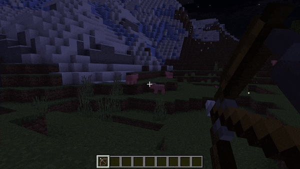
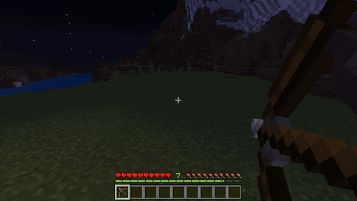
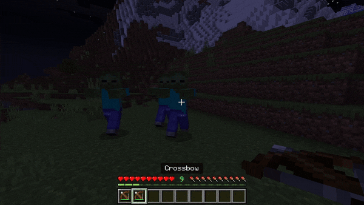
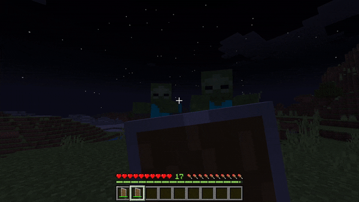
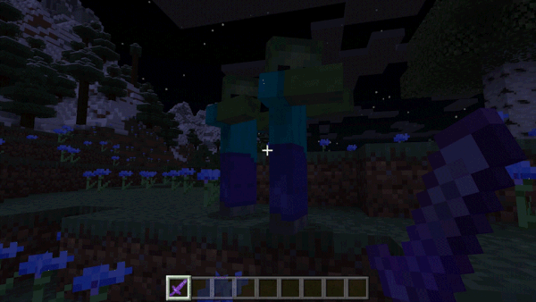
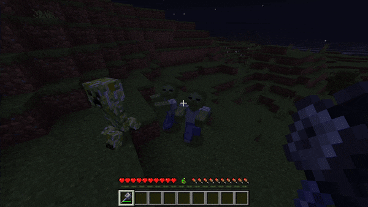
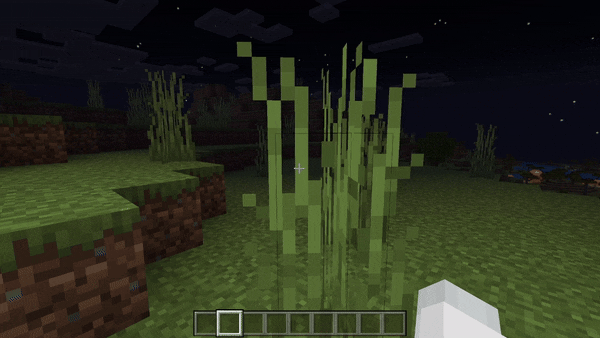
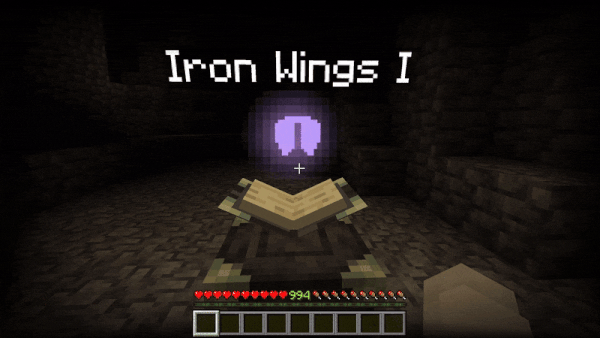
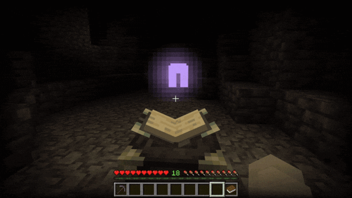
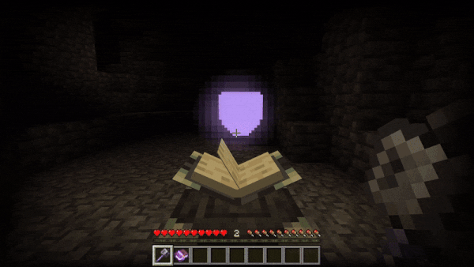
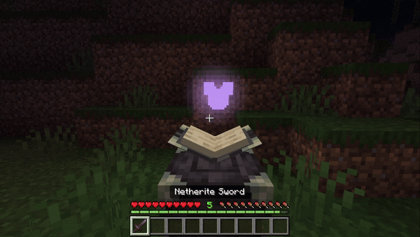
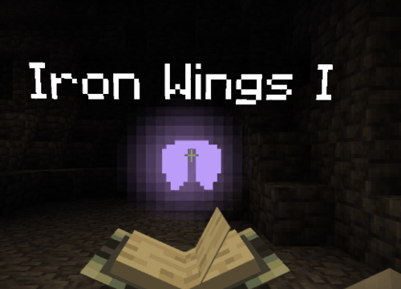